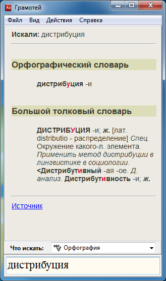

.
.Приложение позволяет:
Используются следующие интернет-ресурсы:
Шаблон может включать в себя подстановочный символ - звездочка (*):
Звездочка (*) используется для представления одной или нескольких неизвестных букв в слове, а также для представления отсутствия букв в слове в определенной позиции.
Примеры правильных запросов: чес*ный, проф*ес*ор, ветрен*ый.
Использование шаблонов доступно в разделах:
Ввод слова вручную

Ввод слова из буфера обмена
Для поиска из буфера обмена следует вызвать контекстное меню иконки в SystemTray .